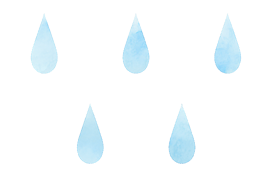
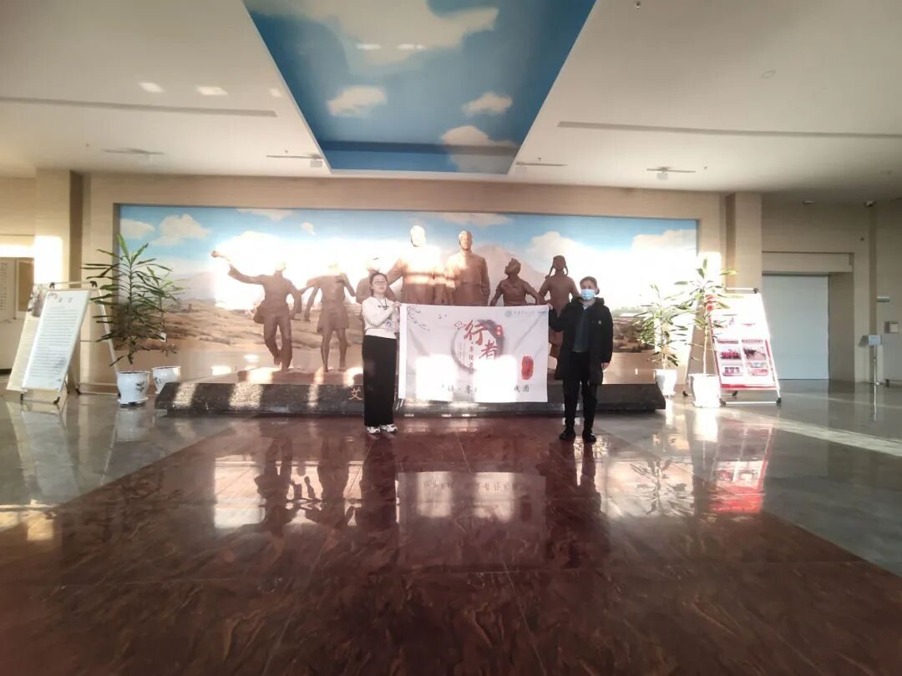
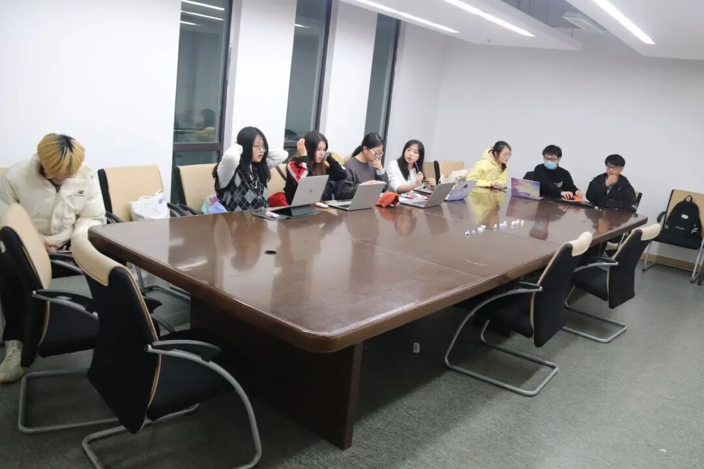
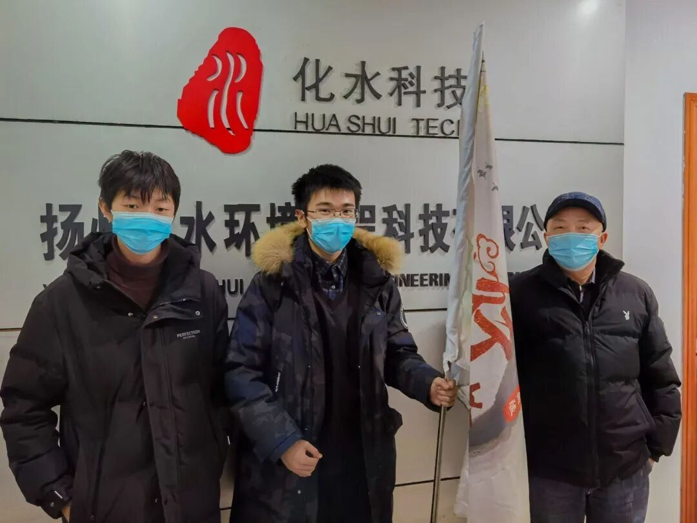
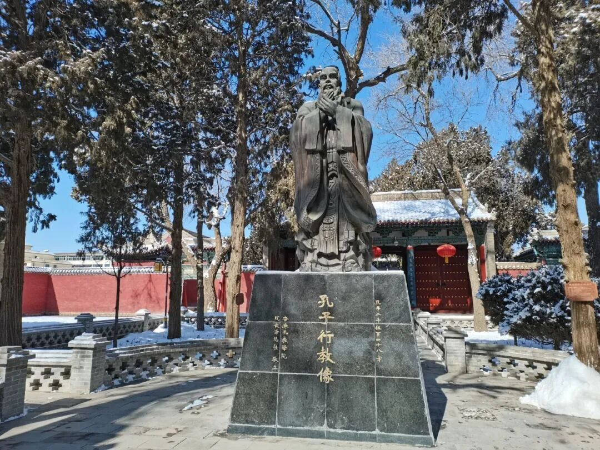

读万卷书，行万里路
行者无疆 赓续前行

春分雨脚落声微，柳岸斜风带客归
行者无疆的第十期“赓续前行”在2021年寒假启程，本次实践将前往江苏扬州，河南内乡，甘肃张掖三个地区进行调研实践，品味当地文化，对比文化差异。

“十“这个数字代表着各位数字的结束也代表着两位数的开始，所以十往往包含着终止和延续两层含义，因此行者无疆的第十期的社会实践既是对过往实践过程画上一个完美的句号，也代表着开始新的征程，基于这层含义，本次行者无疆的选址是基于第九期和第八期调研地扬州和甘肃，在对往期实践内容进行回溯的基础上加上考察由南到北文化差异的目标而选定的河南内乡，一起构成了实践的内容。

经过上一期行者无疆团队的历练，再次跟随团队进行实践任务，两期的经验让我对这个团队有了更加深刻的认识，也对文化调研这个项目有了更深入的了解，在我看来“文化调研”这四个字包含着两层含义，“文化”代表着主观的认识世界，理解其运行机理，构建理论层面的逻辑结构并形成自己的认识观，“调研”代表着基于客观实体而形成的感受和感知，这种感知结合着个人已形成的认识观进而转化为经验或者理论，最后影响着人的行为或思考方式。通俗来讲便是“读万卷书，行万里路”。

行者无疆社会实践的目的也是将抽象的认知和具体的感受联系起来，帮助我们更加客观的看待我们所处的文化环境，对这个幅员辽阔的国家有了更深入的了解，增加了每一位成员的历史传承感和历史责任，进而明白振兴和复兴民族的必要性，激发作为炎黄子孙的历史责任感。这是由于，我们的实践不仅跨越了空间上的距离，探索身处不同地域人群的社会习俗，而且跨越了时间上的差距，探索习俗背后的成因及每座城市的历史沿革。

来源 | 行者无疆实践团
文字 | 张雅妮
排版 | 邢璐娅
审核 | 温兆琪 朱华玮